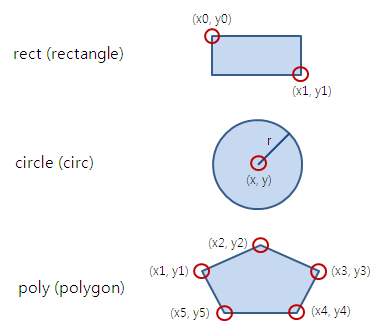

HyperText Markup Language의 줄임말이다.
HyperText란 웹 사이트에서 링크를 클릭해 다른 문서나 사이트로 즉시 이동할 수 있는 기능
Markup이란 태그(tag)를 사용해 문서나 데이터의 구조를 표현하는 것을 말한다.
즉, 웹에서 자유롭게 오갈 수 있는 웹 문서를 만드는 언어이다.
태그(tag): 꺾쇠 괄호로 묶인 요소 이름. 여는 태그와 닫는 태그가 있고(여는 태그만 있는 경우도 존재) 사이엔 콘텐츠가 온다.
속성(attribute): 태그에 대한 추가 정보를 제공. 속성에는 여러가지 값(=value)이 존재(값이 없는 경우도 있음)
1. html의 기본 구조 및 사용 태그
주석: 실제 웹 화면에는 드러나지 않지만 코드에 대한 설명 혹은 이해를 위해 사용한다.
(웹 페이지에서 개발자 도구를 열면 볼 수 있다. = f12)
● !DOCTYPE: 문서 유형(document type)을 지정함
→ HTML5에서는 '!doctype html'라고 선언해주면 된다.
● html: 문서의 시작과 끝을 알리는 태그
→ 'lang'속성을 붙여 사용 언어 지정 가능(값:en, ja, ko, zh, fr, de 등)
● head: 웹브라우저가 알아야 할 값들을 입력하는 곳(웹 화면에 표시 되진 않음).
● meta: 문자 인코딩 방법(보통 utf-8방식을 사용), 또한 간단한 설명 덧붙이기 가능
● title: 페이지의 제목 정하기(창에 표시 된다.)
● body: 실제 웹 화면에 표시되는 내용. 즉, 본문
2. 핵심 block level element
● div: 디자인을 위한 기본적인 block level element 태그.
● h1~h6: 제목 텍스트(숫자가 커질수록 크기는 작아짐.)
ex. h1
ex. h2
ex. h3
ex. h4
ex. h5
ex. h6
● p: 텍스트 단락. 이것으로 단락을 구분한다.
(브라우저 창을 초과하면 줄바꿈 한다는 특성이 있음)
ex. 텍스트 단락
p
● br:기본 줄바꿈 태그. 닫는 태그가 없다.
ex. 줄바꿈
● hr: 수평 줄 삽입
ex.
● blockquote: 인용문 삽입
→ cite속성으로 인용 사이트 주소를 표시할 수 있다.
ex. block level element, 다른 텍스트보다 들여써짐
● pre: 공백, 줄바꿈 예외 없이 포함해 입력한 그대로 표시(code, samp, kbd 등과 함께 사용)
● form:
● ul: 순서 없는 목록/ol: 순서가 있는 목록
● li: 목록 리스트
● dl: 설명 리스트/dt: 설명 제목/dd: 설명 내용
● table: 표를 감싸는 태그
● tr: 표의 행(줄 추가)/th: 제목 셀/td: 일반 셀
● thead: 표의 제목 부분/tbody: 표의 본문 부분/tfoot: 표의 요약 부분
3. 핵심 inline level element
● span: 디자인을 위한 기본적인 inline level element
● a: 링크를 삽입하는 태그
ex.
● img: 이미지를 삽입하는 태그
● b: 굵게 표시할 텍스트/strong: 굵게 표시할 텍스트(강조)
ex. 굵게 표시/굵게 표시(강조)
● i: 이탤릭체(italic)로 표시할 텍스트/em: 이탤릭체로 표시할 텍스트(강조)
ex. 이탤릭체로 표시/이탤릭체로 표시(강조)
● s: 취소선을 표시할 텍스트/del: 취소선을 표시할 텍스트(강조)
ex.취소선으로 표시/취소선으로 표시(강조)
● u: 밑줄로 표시할 텍스트/ins: 밑줄로 표시할 텍스트(강조)
ex.밑줄로 표시/밑줄로 표시(강조)
● mark: 형광펜 효과 내기
ex.형광펜 효과
● sup: 위 첨자 표시/sub: 아래 첨자 표시
ex.위 첨자 표시/아래 첨자 표시
● big: 크게 표시 텍스트/small: 작게 표시 텍스트
ex. 큰 텍스트/작은 텍스트
● q: 인용 내용 표시
inline level element, 줄바꿈 없고 따옴표로 표시됨.
● ruby: 주석을 표기 할 글자 선택/rt: 주석 입력(rt태그는 ruby태그에 포함된다.)
한자
● abbr: 약자로 된 말을 표시한다.(커서를 가까이 대면 설명 텍스트를 볼 수 있다.)
→ title 속성으로 약자를 설명한다.
ex. ex
● cite: 참고 내용 표시(이탤릭채로 표시 된다.)
ex. 참고 내용
● code: 컴퓨터 코드의 일부분을 나타낼 때 사용
ex. A piece of computer code
● samp: 코드를 실행한 뒤 나오는 출력 결과를 나타낼 때 사용
ex. Sample output from a computer program
● kbd: 키보드 입력이나 음성 명령 등 사용자 입력을 나타낼 때 사용
ex. Keyboard input
4. 시맨틱 태그(semantic tag)
● header: 문서에서 머리말 지정(보통 검색창, nav태그를 이용해 사이트 메뉴를 넣음.)
+ 본문 중에 사용해 해당 부분의 머리말로 사용 할 수도 있음.
● nav: 사이트의 링크 모음(header태그, footer태그, aside태그 등에 포함시키거나 독립시키곤 한다.)
● section: 콘텐츠를 주제별로 묶음(hn태그와 함께 사용)
● article: 웹 상의 실제 내용(section태그에 포함될 수도, 안 될수도 있다.)
● aside: 본문 이외 내용을 표시(필수 요소는 아니고 광고나 링크 모음 등 메인 내용과 관련 없는 것을 넣음.)
● iframe: 웹 문서안에 다른 웹 문서를 삽입(=inline frame)
→ src속성: 문서의 주소 지정, width속성: 크기, height속성: 높이, name속성: 이름 붙이기
→ seamless속성: 프레임의 테두리를 없앰
ex.
● footer: 제작 정보 혹은 저작권 정보 표시하기
● address: 사이트 제작자의 정보 및 연락처 나타내기
5. 목록 만드는 태그
⑴ 일반적인 목록
● ul(+li): 순서가 필요하지 않은 목록(unordered list), list태그를 통해 실제 그 리스트를 표시.
ex.
목록 1
목록 2
목록 3
● ol(+li): 순서가 필요한 목록(ordered list), list태그를 통해 실제 그 리스트를 표시.
ex.
목록 1
목록 2
목록 3
→type: ol태그의 속성. 순서를 표시할 때 붙는 기호를 설정(값: 1-숫자, a-영문 소문자, A- 영문 대문자, i-로마 소문자, I-로마 대문자)
→start: ol태그의 속성. 시작 값을 설정한다.
→reversed: 항목을 역순으로 표시한다.
+ li태그는 닫는 태그 생략이 가능하다.(li태그가 다음 li태그를 만남에 따라 /li 태그가 존재함을 인식.)
⑵ 설명 목록
● dl: 용어 설명 목록(description list)
● dt: 제목 표시
● dd: 설명 표시
ex.
설명(dt)
뜻(dd): 어떤 일이나 대상의 내용을 상대편이 잘 알 수 있도록 밝혀 말함. 또는 그런 말.
표시(dd): 說明, explanation 등
6. 표 만드는 태그
⑴ 표의 기본
●table: 표의 전체 윤곽
●tr: 행(row=가로줄) 생성
●th: 제목 셀(table header) 생성/td: 일반 셀(table data) 생성
1. 테두리 표시
→ border: table에 붙는 속성, 테두리를 표시한다.(보통, 값은 1로 함)
2. 셀 합치기
→ rowspan(=가로줄끼리 병합, 방향:↓)·colspan(=세로줄끼리 병합, 방향:→): th혹은td에 붙는 속성, 합칠 셀의 개수를 값으로 가진다.
+ 참고로 합쳐질 셀들은 입력하지 않는다.
ex.
표의 제목
rowspan=2,colspan=2
rowspan=3
1행 4열
2행 4열
colspan=2
3행 4열
colsapn=4
⑵ 표에 제목 붙이기
● caption: table태그에 포함(table태그 이 후 사용). 중앙정렬 됨
● figure: 글을 붙이고 싶은 대상을 figure 태그로 감쌈./figcaption: figure 태그에 포함, table의 위 혹은 /table의 아래에 삽입, 왼쪽정렬
⑶ 표 구조 정의
● thead: 표의 제목 부분
● tbody: 표의 본문 부분
● tfoot: 표의 요약 부분
● colgroup: 열을 묶는 태그(tr와td를 입력하기 전에 사용)/col: 묶어질 실제 열(닫는 태그가 없고, 실제 표의 열의 개수와 같아야 함.)
→ span 속성을 이용해 몇 개를 함께 묶을지 지정한다.
7. 이미지 및 링크 등
⑴ img 태그
● img: 이미지 삽입(닫는 태그 없음)
● figure: 글을 붙이고 싶은 대상을 figure 태그로 감쌈./figcaption: figure 태그에 포함,img의 위 혹은 아래에 삽입, 왼쪽정렬
1. 이미지 경로
→ src: 파일 경로 지정
2. 대체 텍스트
→ alt: 이미지를 표시할 수 없는 상황에 보여주는 대체 텍스트 입력
3. 크기
→ width: 크기, height: 높이
⑵ a 태그
● a: 링크 삽입
1. 링크 주소
→ href: 링크한 문서나 사이트의 주소 입력
2. 링크 내용이 표시 될 (창)위치
→ target: 링크한 내용이 표시될 위치 지정(값:_self-기본값으로 링크가 있는 화면에서 열림, _blank-새 창)
3. 이 외 속성
→ title: 커서를 링크에 대면 포스트잇이 뜨면서 설명을 나타냄, download: 링크한 내용을 다운로드, rel: 현재 문서와 링크한 문서의 관계를 알려줌,
hreflang: 링크한 문서의 언어 지정, type: 링크한 문서의 파일 유형
⑶ map 태그(이미지 맵)
● map: 한 이미지 상에서 클릭 위치에 따라 서로 다른 링크가 열리는 것
● area: 이미지에 영역을 표시, 그림판을 이용하면 좌표 값(coords)을 알 수 있다.
ex.

1. map 속성
→ name: 맵의 이름 정하기
2. area 속성
→ coords: 링크로 사용할 영역을 시작 좌표와 끝 좌표를 이용해 지정,
shape: 영역의 형태(dafault-전체 지역을 지정함,rect-직사각형 영역 규정,circle-원형 영역 규정,poly-다각형 영역 규정), alt: 대체텍스트,
href: 링크의 경로 지정, target: 링크한 내용이 표시 되는 위치, download: 링크한 내용을 다운로드, rel: 현재 문서와 링크 문서의 관계를 알려줌 hreflang: 링크한 문서의 언어 지정
3. img 속성
→ usemap: 이미지 맵 지정(값: map에서 사용한 name의 값, 즉 map과 img를 잇는다.)
8. form태그와 input태그
● form: 서버로 정보를 보낼 때 사용하는 태그(서버로 보내질 값들을 묶는다.)
● input: 폼을 위해 실제 화면에 투입되는 태그=폼 요소(사용자 입력 부분, 서버로 보내는 부분으로 나뉨)
● label: 폼 요소에 레이블(옆에 붙여질 텍스트)을 붙이는 태그
+ label에는 for속성(값: id속성에 사용한 값)을 쓰고 폼 요소에는 id 속성을 사용하여 둘을 연결한다. label태그 안에 폼요소를 포함 할 수도, 혹은 서로 분리 할 수도 있다.
● fieldset: 폼 요소를 한 그룹으로 묶음/legend: 묶은 그룹에 제목을 붙인다.
1. 서버 상의 프로그램 지정
→ action: form에 붙는 속성. asp, php, jsp 등의 보내질 서버 프로그램 지정
2. 서버로 넘겨줄 방법
→ method: form에 붙는 속성. 입력한 값들을 서버로 보낼 방법(값: get-사용자가 입력한 값이 그대로 드러남, post-대부분 이 값을 사용. 사용자가 입력한 값이 드러나지 않고 입력 길이에 제한이 없음)
3. 자동 완성 기능
→ autocomplete: form에 붙는 속성. 이전에 입력했던 내용을 기억했다가 다시 입력할 때 밑의 창에 표시(기본값:on. off로 끌 수 있다.)
4. 이 외 속성
→ target: form에 붙는 속성. action 태그에서 지정한 파일이 열릴 위치를 정한다 , name: form에 붙는 속성. 폼의 이름을 정해 다른 폼과 구별한다.
⑴ input 태그의 속성과 값의 종류
1. 이름 붙이기
→name: 폼 요소에 이름 붙이기, id: 폼 요소에 id 붙이기(css에 식별 된다는 점에서 name과 구별됨.)
2. 유형
→type
값 종류
⒜ 보이지 않는 값
①hidden: 화면 상에는 보이지 않지만 서버에 보낼 때 함께 전송되는 요소(굳이 사용자에게 보여 줄 필요없고 관리자가 알아야 하는 것에 쓴다.)
⒝ 텍스트 상자
①text: 텍스트를 입력할 수 있는 텍스트 상자를 넣는다.
②search: 검색 상자를 넣는다.
③tel: 전화번호 입력 필드를 넣는다.
④url: url 주소를 입력할 수 있는 필드를 넣는다.
⑤email: 메일 주소를 입력할 수 있는 필드를 넣는다.
⑥password: 비밀번호를 입력할 수 있는 필드를 넣는다.(텍스트가 보이지 않음, 문자로 대신)
⒞ 날짜 및 시간
①date: 사용자 지역 기준 날짜(연,월,일)를 입력할 수 있는 칸
②month: 사용자 지역 기준 날짜(연,월)를 입력할 수 있는 칸
③week: 사용자 지역 기준 날짜(연,주)를 입력할 수 있는 칸
④time: 사용자 지역 기준 시간(시,분,초,분할 초)을 입력할 수 있는 칸
⑤datetime: 국제 표준시(UTC)로 설정된 날짜(연,월,일)와 시간(시,분,초,분할 초)을 입력할 수 있는 칸
⑥datetime-local: 사용자 지역 기준 날짜(연,월,일)와 시간(시,분,초,분할 초)을 입력할 수 있는 칸
⒟ 숫자
①number: 숫자를 조절하는 화살표를 넣는다.
②range: 숫자를 조절하는 막대를 넣는다.
⒠ 체크박스와 라디오 버튼
①checkbox: 주어진 항목에서 2개 이상을 선택할 수 있는 체크박스를 투입
②radio: 주어진 항목에서 단 1개만을 선택할 수 있는 라디오 버튼을 투입
⒡ 서버 전송 값
①submit: 사용자가 입력한 정보를 서버에 전송하는 버튼
②image: submit의 기능을 지닌 이미지
⒢ 기타
①color: 색상 선택 상자
②file: 파일을 첨부할 수 있는 버튼
③reset: 사용자가 입력한 모든 정보를 재설정
④button: 아무 기능이 없는 버튼(보통 스크립트 함수와 함께 사용)
3. 입력 커서 표시
→ autofocus: 페이지를 불러오자마자 원하는 요소에 마우스 커서를 표시함
4. 힌트 표시
→ placeholder: 힌트 표시, 초기에 힌트를 표시하고 있다가 그 필드를 클릭하면 사라짐
5. 읽기 전용 필드
→ readonly: 사용자가 입력하지 못하고 읽게만 한다.
6. 필수 필드
→ required: 서버에 보내기 전 필수적으로 입력해야 하는 칸
7. 최솟값, 최댓값, 간격(type="month, week, time, date, datetime, datetime-local, number, range"일 때 사용가능)
→ min: 최솟값 설정, max: 최댓값 설정, step: 값을 늘리거나 줄일 때 변동되는 값의 간격
8. 길이, 최소길이, 최대길이(type="text, search, tel, url, email, password"일 때 사용가능)
→ size: 텍스트 필드의 길이 지정. 즉 화면에 몇 글자가 보이게 할 것인지 지정한다. , minlength: 최소 몇 글자를 입력해야 하는지 지정, maxlength: 최대 몇 글자까지 입력할 수 있는지 지정
9. 초기 값 혹은 화면 표시 값
→ value:
ⓐtype="hidden, radio, checkbox"에서: 서버로 넘겨 알려줄 값
ⓑtype="text, search, tel, url, email, password"에서: 텍스트 상자에 표시 될 내용
ⓒtype="number, range"에서: 필드에 표시 될 초기값, 숫자로 지정한다.
ⓓtype="month, week, time, date, datetime, datetime-local"에서: 필드에 표시 될 초기값, 날짜 값 설정 후 시간설정은 'T'라는 키워드를 붙여서쓴다.
ⓔtype="color"에서: 초기 기본 색 설정
ⓕtype="button, submit, reset"에서: 버튼에 표시 될 내용
10. 이 외 속성
→ checked: type="radio"에서 사용. 기본으로 선택될 항목 설정, src·alt: type="image"에서 사용. 파일 경로와 대체 텍스트 입력
height·width: type="image"에서 사용. 이미지의 높이와 너비를 지정한다.
⑵ 입력하지 않고 옵션 중 선택하는 폼요소
● select: 드롭다운 목록 만들기(선택만 됨.)
ex.
● datalist: 데이터 목록 만들기(선택됨은 물론 바로 값이 입력 된다.)
+ datalist는 텍스트 필드(input type="text")를 기반으로 한다. 텍스트 필드에는 list 속성(값:id속성에 사용한 값)을 사용하고 datalist에서는 id 속성을 사용해 둘을 연결한다.
ex.
● optgroup: 목록 값들을 그룹으로 묶기/option: 목록에 값 추가하기
● textarea: 한 줄 이상의 문장을 입력하기 위해 텍스트 영역을 만든다.
ex.
1. select 태그의 속성
→ size: 드롭다운 항목 갯수, multiple: Ctrl키를 누르면 한번에 여러 항목을 선택 가능하게 만든다.
2. select의 option태그 속성
→ value: 서버로 넘겨질 값, label: 화면에 실제로 표시 될 이름을 붙인다(태그 안에 값을 입력한 것과 같음), selected: 초기에 선택되어 있을 항목을 지정한다.
3. datalist의 option태그 속성
→ value: 서버로 넘겨질 값. 다만 실제 화면에 표시 된다, label: 화면에 실제로 표시 될 이름을 붙인다(태그 안에 값을 입력한 것과 같음)
4. optgroup의 속성
→ label: 화면에 실제로 표시 될 이름을 붙인다.
5. textarea의 속성
→ name: 다른 요소와 구분 위해 이름을 정함, cols: 문자 단위(=px)를 기준으로 가로 너비를 지정, rows: 문자 단위(=px)를 기준으로 세로 너비를 지정
⑶ 그 외 폼요소로 활용하는 태그
● button: 버튼 넣기
+ button태그 사이에 img태그를 넣어 결합하는 것이 가능하다.
ex.
● output: 계산의 결과(스크립트 함수와 함께 사용)
ex. +=
● progress: 진행 상태 표시하기
ex.
● meter: 값이 차지하는 정도 표시하기(낮거나 높으면 색상이 변한다)
ex.
1. button 태그의 속성
→ type: button태그의 유형을 정한다.(값: submit-폼을 서버로 전송, reset-폼에 입력한 모든 값을 초기화, button-버튼을 만든다. 자체기능 없음)
2. progress 태그의 속성
→ value: 작업 진행 상태를 나타냄(0보다 커야하며 max의 값보다 작거나 같아야 함. 만약 max값이 지정되어 있지 않다면 값이 1보다 작아야 함),
max: 작업이 완료되려면 얼마나 많은 작업을 해야하는지 설정(0보다 커야함)
3. meter 태그의 속성
→ value: 범위 내에서 차지하는 값, min·max: 범위의 최솟값 최댓값을 나타냄(값을 정하지 않으면 0과 1로 간주함),
low·high·optimum: '이 정도면 낮다 혹은 높다 혹은 적당하다'라고 할 정도의 범위를 정한다.
9. 이 외 기타 태그들
⑴ 오디오, 비디오, 외부 파일
⒜ 외부 프로그램의 개념: 웹 브라우저에서 처리할 수 없는 작업 때문에 웹 문서 안에 포함시킨 외부 프로그램 기능을 플러그인(plug-in)이라고 한다.
ActiveX 형태로 플러그인이 제공 되기도 한다. 이런 플러그인은 object 태그와 embed태그로 사용한다. 자바 애플릿, PDF 파일, 플래시 무비 등이 대표적이다.
● object: 외부 파일 삽입
● embed: 외부 파일 삽입(HTML5 이전 브라우저)
ex.
10. 인터넷 열기
⑴ 웹 서버 설치
apache(Bitnami WAMP)를 설치하기
⑵ 웹 호스팅 업체
github, dothome 등의 사이트 / 이외 static web hosting
11. 부록
동영상-유튜브 소스코드
댓글-LiveRe, DisQus
채팅-tawk.to
방문자 분석기-analytics, 구글
 ● b: 굵게 표시할 텍스트/strong: 굵게 표시할 텍스트(강조)
ex. 굵게 표시/굵게 표시(강조)
● i: 이탤릭체(italic)로 표시할 텍스트/em: 이탤릭체로 표시할 텍스트(강조)
ex. 이탤릭체로 표시/이탤릭체로 표시(강조)
● s: 취소선을 표시할 텍스트/del: 취소선을 표시할 텍스트(강조)
● b: 굵게 표시할 텍스트/strong: 굵게 표시할 텍스트(강조)
ex. 굵게 표시/굵게 표시(강조)
● i: 이탤릭체(italic)로 표시할 텍스트/em: 이탤릭체로 표시할 텍스트(강조)
ex. 이탤릭체로 표시/이탤릭체로 표시(강조)
● s: 취소선을 표시할 텍스트/del: 취소선을 표시할 텍스트(강조)